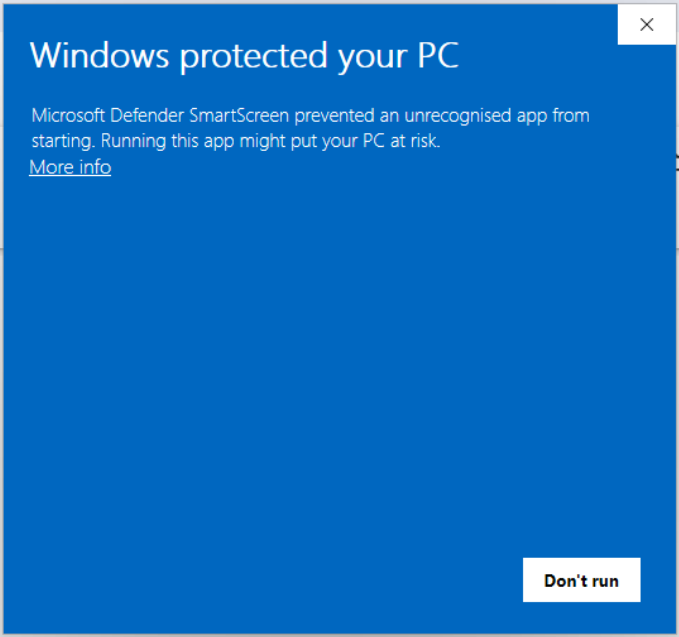
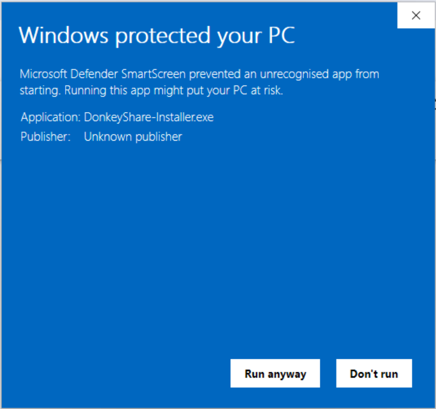

A premium, lightweight standalone audio streamer. Decodes, caches, and organizes music directly on your machine without trackers or subscription bloat.
Includes an automatic setup wizard which handles installation and downloads all dependencies instantly.
A single terminal command sets up the application directory, app icon, launcher, and uninstaller.
Runs direct stdout-to-stdin decoding streams utilizing internal yt-dlp extraction and ffmpeg codecs, skipping browser memory bloat and preventing 403 blocks.
Automatically saves played tracks. Files are stored inside encrypted local subfolders under hashed names. If a track fails integrity checks, it auto-refetches seamlessly.
Your search logs, favorite lists, and creator subscriptions are kept entirely local on your device. Zero external data endpoints, tracking, or logs.
Subscribe to your favorite creators channels. When your playlist queues finish, TuneLister pulls music from sub channels in the background to continue playback endlessly.
TuneLister is a fully standalone, desktop-optimized wrapper that directly interfaces with high-performance audio decoders. Unlike web alternatives, it integrates native storage cache, zero tracker scripts, desktop hotkeys, and PKCE-secure database account integrations to store your playlists safely.
No. The install script installs completely inside your local user space (`~/.local/bin` and `~/.config/TuneLister`). No sudo or administrative privileges are needed, keeping your system completely safe.
All user authentication operations use Google OAuth PKCE and SHA-256 code verifications. Locally stored database entries are protected using AES-256-GCM encryption with bcrypt-hashed keys.
On Windows, you can simply run the default uninstaller from the settings page or control panel. On Linux, the quick script generates an automatic uninstaller script: run `remove-tunelister` in your terminal to completely wipe all associated files and cache.
TuneLister is 100% safe and open-source. Since it is a new release, Windows Defender might ask for confirmation.
When the "Windows protected your PC" screen appears, click the More info link under the text.

A new button Run anyway will appear at the bottom. Click it to launch the setup installer.
